首页»大科普»科普正文
倒车技巧图解
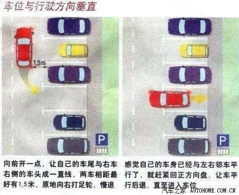
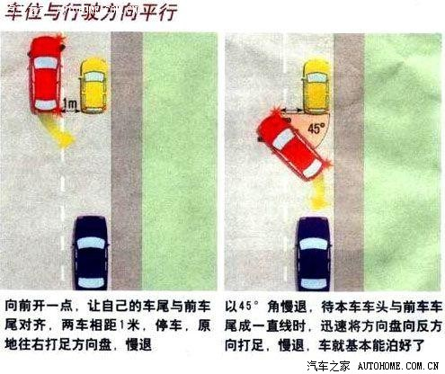
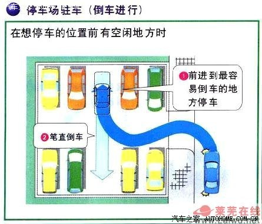

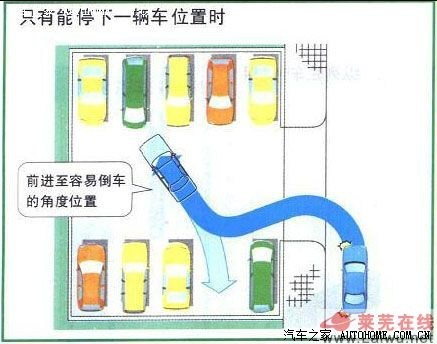
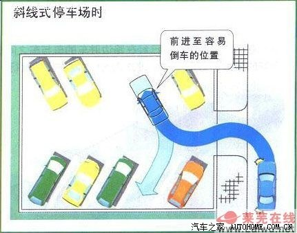
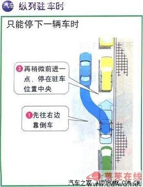
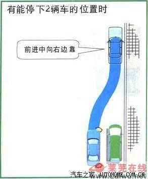
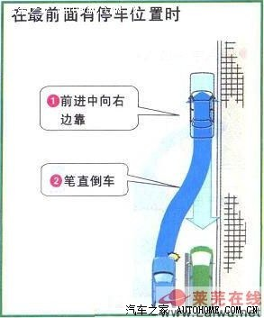
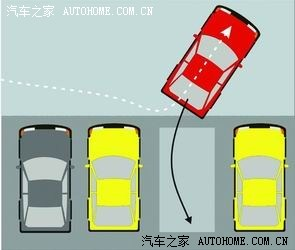
有一种错误概念，说倒车只要看左右反光镜和后视镜就可以了，事实上，这远远不够，最好养成倒车回头看的好习惯。而将看左右反光镜和后视镜作为辅助手段。
倒车车速不得高于7km/h(2米/秒)，较慢的速度能给人留有更多的观察和打轮余地。
对新手来说，必要的联系很有好处，而且，做完一次动作，无论感觉成功与否都先下车，前后左右观察一番，找到下一次改进的感觉，如此反复，定会收到事半功倍的效果。
图解新手倒车的窍门：
车与马路牙子相距10-20cm为宜，大概就是一个反光镜的宽度。
车身调正，保持与旁车1米左右的间距
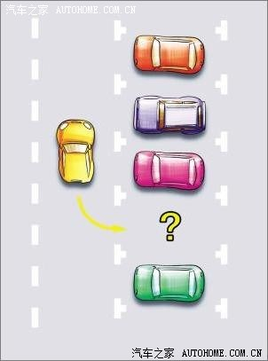
开始倒库，用右后轮去找轮胎点，当轮胎过了库右上角的轮胎点后，马上将方向打满
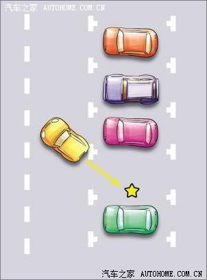
车身位置调正后，将方向盘调正，然后继续倒车，直至车身完全入库
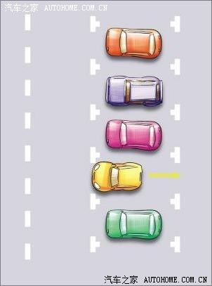
保持自己的车与前车间距60厘米左右并调到平齐位置
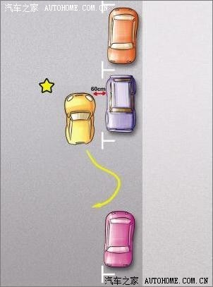
用车尾去找车库的中心点，然后保持约45度角的位置入库。当车尾快碰到马路牙子后，快速反打方向盘，将车头送入车位，最后微调即可
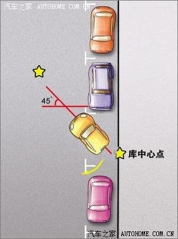